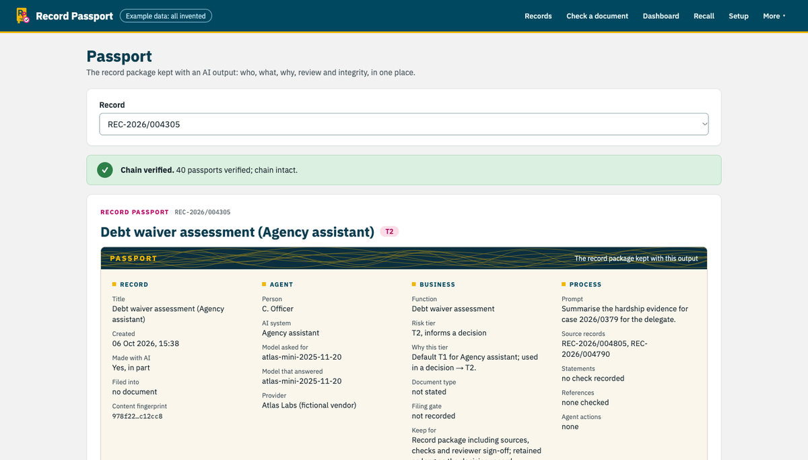

Finalist · RIMPA Global Hackathon 2026
Record Passport
When an AI-assisted document becomes a government record, Record Passport works out what to trust from the evidence, not from whether AI touched it. It looks up every citation and traces every sentence to authoritative records. It then files a hash-chained record package, and recalls everything a faulty model helped make.
- The engine enforces the rules, and the API re-derives every verdict instead of trusting its callers
- The language model only splits text into claims, with a deterministic offline fallback
- 284 tests, with an edge-case register that a test keeps in sync with the code
Python · FastAPI · Next.js · Postgres (Neon) · Vercel · Claude API